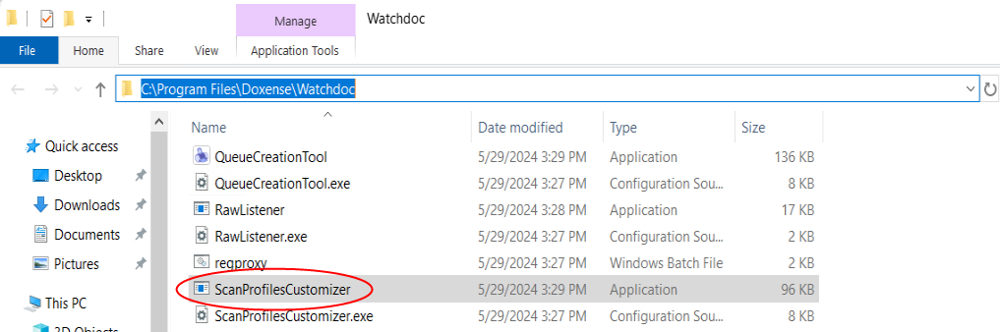
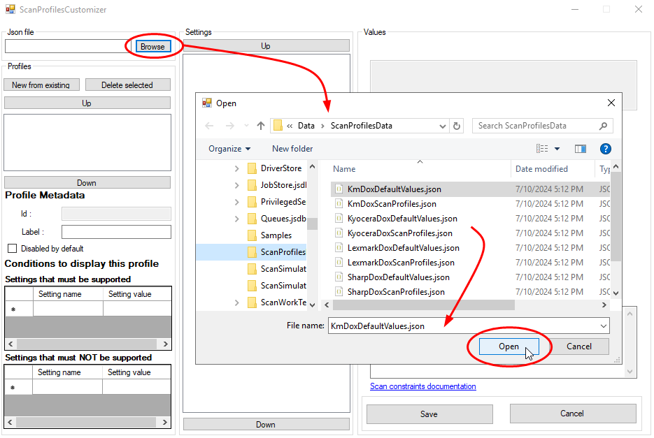
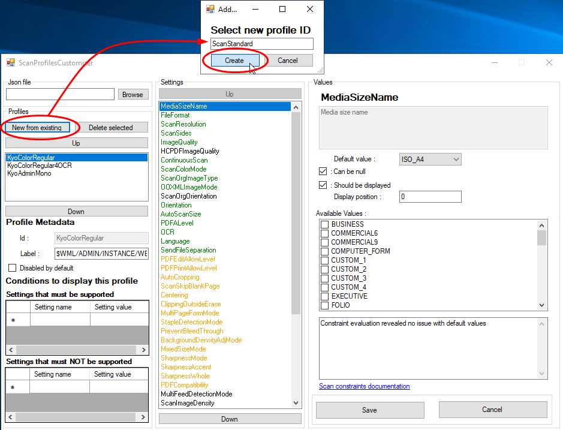
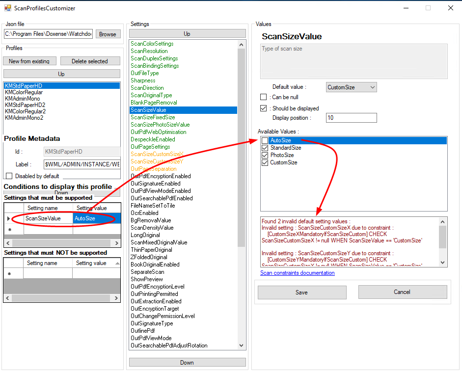
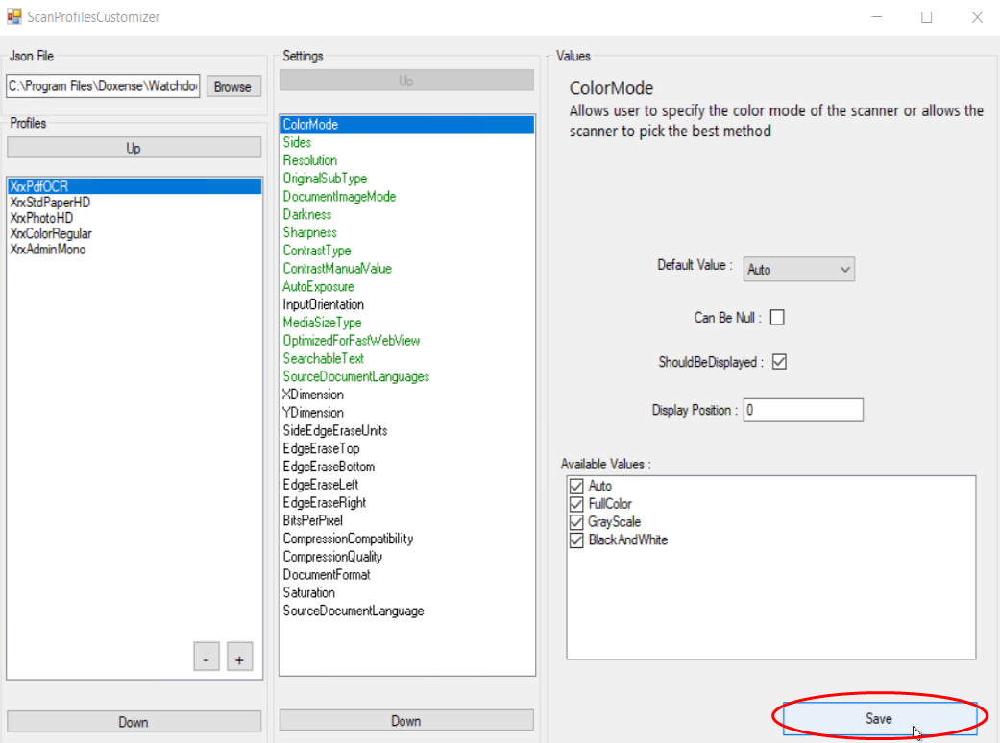
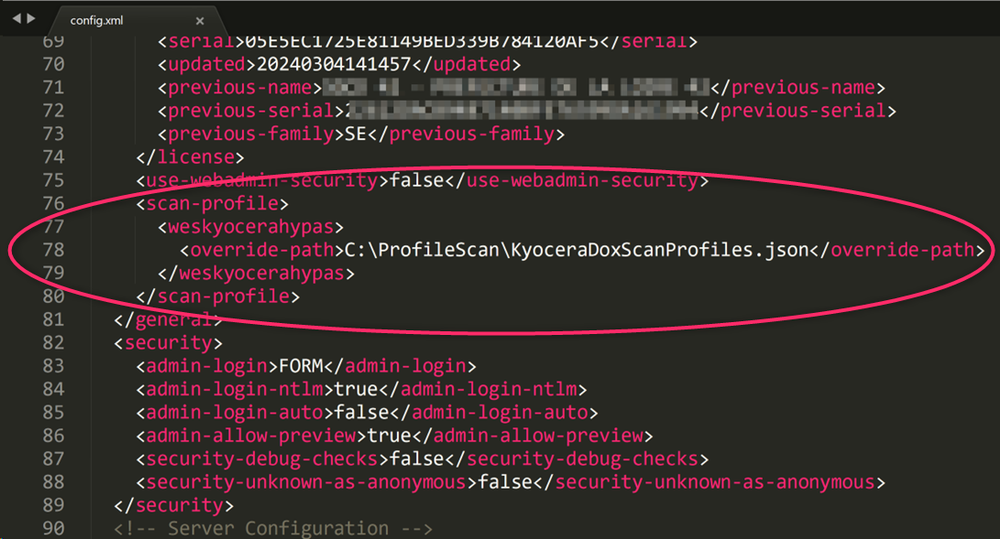

Principe
Un profil (de scan / de numérisation) est une somme de paramètres (format, couleur, orientation, type du document, etc.) définissant la manière dont un document est numérisé.
Enregistré dans un fichier JSON, le profil de numérisation peut être modifié à l'aide de l'exécutable ScanProfilesCustomizer. N.B. : dans un domaine, pour garantir la disponibilité des profils de numérisation sur tous les serveurs qui dépendent du serveur maître en cas de panne de la base de données interserveur, il convient de dupliquer tous les fichiers JSON des profils de numérisation du serveur master sur les serveurs qui en dépendent.
Pour cela, copiez le dossier de profils de numérisation personnalisés (dans lequel vous avez enregistré vos profils personnalisés) de votre serveur master sur le(s) serveur(s) qui en dépendent.
Prérequis
Nous vous recommandons de ne pas modifier directement les fichiers par défaut des profils de numérisation. Vous risquez en effet de perdre les nouveaux paramètres lors de la mise à jour, l'ancien fichier (personnalisé) étant alors écrasé par le fichier standard.
Pour créer et modifier un profil de numérisation, nous vous conseillons de copier/coller un profil existant et de modifier la copie. Il convient donc de créer un dossier dans lequel les fichiers personnalisés seront enregistrés.
Procédure
Créer un dossier de profils de numérisation personnalisés
-
Accédez au serveur Watchdoc en tant qu'administrateur ;
-
créez un dossier personnalisé dans lequel seront enregistrés vos profils de numérisation personnalisés (par exemple : C:\Work\Projets\SCAN).
Accéder à l'exécutable
Lancez ScanProfilesCustomizer :
-
rendez-vous dans le dossier C:\Program Files\Doxense\Watchdoc,
-
cliquez sur ScanProfiles Customizer.exe :

Configurer le profil de numérisation personnalisé
-
Dans la section JSon File, cliquez sur Browse pour parcourir la liste des profils existants ;
è par défaut, l'outil affiche le contenu du dossier C:\Program Files\Doxense\Watchdoc\Data\ScanProfilesData qui contient les profils par défaut pour les marques compatibles avec WEScan ;
-
sélectionnez le profil correspondant à la marque et la technologie du profil que vous voulez créer ;
è le profil sélectionné est surligné dans la section Profiles et ses paramètres s'affichent dans la section Settings :

-
cliquez sur le bouton New from existing ;
-
dans la boîte Add..., saisissez dans le champ l'identifiant du nouveau profil :
-
cliquez sur Create :

-
Le nouveau profil s'affiche dans la section Profiles : sélectionnez-le pour en afficher les paramètres dans la section Settings.
-
dans Settings, sélectionnez chaque paramètre à modifier et définissez ses valeurs dans la section Values ;
-
en vert figurent les paramètres affichés en priorité dans l'interface WEScan ;
-
en orange figurent les paramètres disponibles, mais affichés dans un ordre alétoire dans l'interface WEScan :
-
-
Certains paramètres doivent respecter des contraintes listées dans la section Conditions to display this profile : settings that must be supported / that must not be supported .
Lorsque ces conditions ne sont pas respectées, un message d'information s'affiche. Sous cette fenêtre, un lien envoie vers la documentation des Contraintes de configuration des profils de scan.

-
Une fois le profil configuré selon vos besoins, cliquez sur Save pour le sauvegarder :

-
Enregistrez-le dans le dossier dédié aux profils personnalisés (créé préalablement).
Finaliser la configuration
-
Sur le serveur Watchdoc, ouvrez le fichier de configuration (C:\Program Files\Doxense\Watchdoc\Data\config.xml) avec un éditeur de texte.
-
Retrouvez la balise correspondant aux profils de numérisation installés <scan-profile> ;
-
Dans la balise <wes...>, notez le type de l'instance correspondant à vos profils de numérisation (cf. ci-dessous) ;
-
Sous la balise d'instance, copiez les balises <override-path> </override-path> et indiquez dans cette balise le chemin d'accès au nouveau fichier de configuration :

-
Enregistrez le fichier config. xml ;
-
Redémarrez le service Watchdoc.
Les instances correspondent aux marques et technologies compatibles avec WEScan sont :
-
weshpoxpd
-
weskmopenapi
-
weskonicaminolta
-
weskyocerahypas
-
weslexmarkesf
-
wessharposa
-
wessharpesf
-
westoshibaesf
-
wesxeroxeip